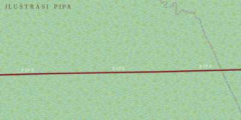

Partai Rimba Lestari took the Forestry Ministry in 2027 on a single slogan "Peat Is Not for Sale." Its chair, Sri Wahyuni, repeated it at rallies across Kalimantan and Sumatra.
Ministry decrees reviewed by this newspaper show that on 14 November 2027, eleven days after announcing a stricter peat policy, the ministry reclassified 11,200 hectares of forest land in Kapuas Rimba Regency and handed it to three newly registered companies. Laid over the national peat map, almost all of it sits on land the ministry itself lists as a restoration priority.
The three permits went to PT Kencana Hijau Agro, PT Lestari Banua Sawit and PT Mitra Tanah Khatulistiwa. None appears in the ministry's public permit register, which lists the marcels as "under verification" with no company names.
Ministry spokesperson Andi Pratama said the register ""is updated batches and that the omission was administrative. The decrees carry the signature of Dedi Kurniawan, the ministry's planning director general and a PRL member. He did not respond to requests for comment.
PRL's legal office called the permits qoute legacy applications and said all activity on the land is frozen. In September, our reporter found freshly dug drainage canals on two of the three parcels.
All three were incorporated in 2026. Their directors are unknown in the industry, and two share a South Jakarta address with a small notary office.
A shareholder in PT Lestari Banua Sawit, Rina Marlina, is the sister-in-law of Hendra Wijaya, PRL's treasurer for Central Kalimantan. A director of PT Mitra Tanah Khatulistiwa, Yusuf Harahap, also controls a timber trading firm that gave Rp 750 million to the PRL provincial branch in 2027, according to the party's filings.
Wijaya called the family link "coincidental" and said he has "no role in any company." Harahap described his donation as "a normal contribution to a party whose forestry policies I supported."
PRL's record is not empty. The ministry has recognized dozens of customary forests since taking office and funded peat rewetting that independent monitors have confirmed. Forest-governance researcher Teguh Wibowo said the party "did the visible things well, and the permits are the invisible things." He added that nothing in the documents shows Wahyuni knew of the decrees.
Minister Rahmat Hidayat said "every permit will be reviewed" and that he would not "defend any decision that contradicts our own policy."
Warta Nusantara discloses that its parent, Bakraya Group, has plantation and coal interests, and that the group's chairman sits on Golker's advisory board. Editors say the investigation was reported independently, with no input from the group.
PRL's legal office said ministry records show Bakraya Plantations holds two concessions in the same regency, and asked why the newspaper had not mentioned them.
Golker called for a "full audit" of forest permits within hours of this story's early online version, before the ministry or PRL had commented. Spokesperson Maria Simanjuntak said the party "monitors public documents."
Media-ethics researcher Ayu Rahmawati reviewed the reporting at our request and called the central allegation "well documented." She noted that two of the nine concessions bordering the disputed land were approved under the previous administration, one of them to a Bakraya subsidiary. That fact does not appear in the main reporting.
Editors said the earlier permits "fall outside the scope of this investigation." PRL called the omission "selective." Golker declined to comment.
The ministry has promised a review within 30 days, and an environmental group plans to ask the anti-corruption commission to examine the three permits. Whether the beneficiaries are tied to PRL officials, or to anyone else, remains unproven. The permits were signed, the peat is real, and the canals are being dug.